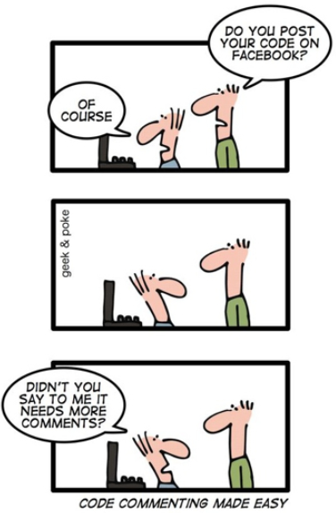
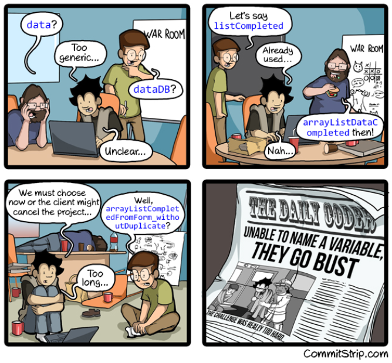
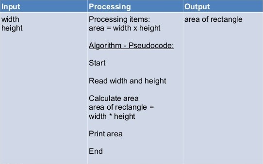
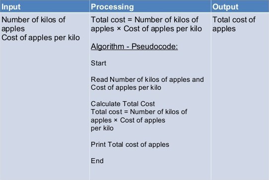
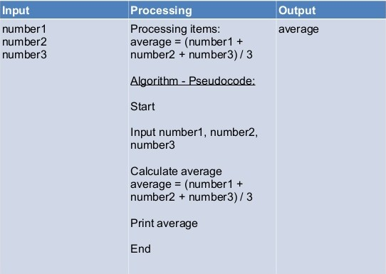
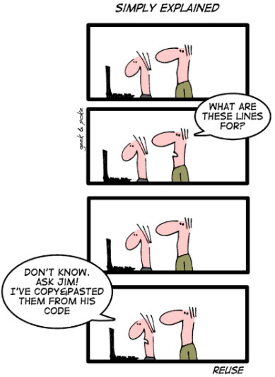

Unit 4: Programming with Python
Activity 2: Programming Standards
Good Programming Practices
Up until now, you were asked to create programs that were tested by an automatic grader. That grader was limited in its functionality; it could create various inputs to test your program and examine the program outputs. At times the grader could also limit which python functions you were allowed to use in your code.
However, writing good programs is about more than simply generating the correct output for a given input. Programmers must also learn to plan their programs out before starting to write their code, use sound design principles, and create code that is both clear in its intent and maintainable in the long term. For this and future activities, your programs will be assessed for style and design, as well as correctness. .
Style
- Internal Documentation (Header, labelled code sections, documentation descriptions, other internal comments)
- Structure (Indentation, whitespace, code location, variable naming & data types, general readability)
Design
- Planning: How did you plan the content of your program before coding? (IPO, HIPO, flowchart, storyboard)
- Is your program design logical, efficient and constructed correctly? (not formally evaluated at this time, but this is a hallmark of a good coder!)
Correctness
- Does your program produce the expected results, using the concepts from the course?
Program Style
| Programmers often work in teams, and for this reason it is critical to include internal documentation so that other programmers can easily
understand the intentions and the purpose of your code. Internal documentation is created in Python by starting the line with the # sign (other languages use other
symbols).
Comments at the beginning of the program must include the name of the author, the name of the program, the date it was created, and its purpose. After this the different sections of program should also be identified. These sections should be labelled, #Variable Definition, #Input, #Processing and #Output. More complicated programs will require additional comments. All good coding requires comments. Remember that just because your program works does not mean you will get full marks; this is actually only a portion of the final mark for the assignment. |
 |
|---|
Other elements of program style involve proper indentation and use of whitespace, which when used properly enhance code readability. Python uses indentation to create blocks of code, which is one of the reasons it is such a good teaching language. (Other languages do not require this and it can make for very hard to read code!) White space is simply allowing for blank lines in your code to group sections of code together and visually separate them from other sections of code.
|
 |
When naming variables, choose variable names that make the purpose of the variable clear. A convention that we will use in this class is to always begin variable names with a lowercase letter. Keep in mind that in Python, as in most programming languages, variable names are case sensitive; name is not the same as Name. For longer variable names requiring 2 or more words, each additional word will begin with an uppercase letter Do not use reserved words for variable names; if a word turns blue in Eclipse, it is a reserved word and cannot be used as a variable name. |
|---|
Program Design
We create programs in order to solve problems, so it's important to have a process for problem-solving. Recall from Unit 1: A computer's hardware can be broken down into 4 categories: Input devices, System Unit, Storage Unit, Output devices. In a similar way, many computer programs can be broken down into 3 parts:
- Input
- What information will you require from the user?
- Processing & Storage
- What will you do with that information?
- Output
- What will you show to the user when the program is complete?
BEFORE sitting at the computer and writing code, it's important to plan the content of your program using a problem-solving model like an IPO chart. More complicated programs will require other problem-solving models, which we will see later.
| INPUT | PROCESSING & STORAGE | OUTPUT |
|
|
|
Here are some example IPO charts for simple programs, such as calculating the area of a rectangle, finding the cost of apples, or finding the average of three numbers:



Program Correctness
Once your have designed and coded your program, it is important to test it! For now, you are safe to assume that the user will enter valid data (i.e. they will input a number when you ask for a number, they will input a string when you ask for a string, etc). However, it is still important to test your program with a range of data, especially boundary conditions (conditions that the program should distinguish between) and extreme values (highest or lowest values in the acceptable range). Recall that when the grader checked your program, they checked the output for a variety of inputs. Make sure you do the same!
|
 |
One final note about academic integrity: plagiarism and other acts of academic dishonesty will be dealt with in accordance with the school’s rules. Talking about the questions is permitted, this is called collaboration. Copying/using/giving code from/to friends or other sources is considered cheating. To ensure you do not cross this line; when talking about a question with someone do so AWAY from your computer with a paper and pen in hand (or better, use a whiteboard!) and write out IDEAS, not code. Then when you are finished talking return to your computer and implement the ideas you have come up with. |
|---|
Data Types
One final reminder - in Python you do not need to specify what type of variable you are using (int, float, or str); this is because Python is a dynamically-typed language (meaning that Python figures out what type the variable is by how you use it.) However, Python is also strongly typed, in that you must use type conversion to change a str to an int, or to change a float to a str.
A common example of this is when you want the user to input a number. Anything the user types by default is considered a str in Python. If you wish to use a user's input in math calculations, you must convert it to either an int or a float.
Below is some sample code to help you with this task. It also demonstrates another way to use the input() function; where you can specify the prompt for the user without using a separate print() function.
# Simple Input Addition Program
# ICS2O Unit 4, Activity 2
# Created by K. Spindler
# Input: user's name
name = input('Please enter your name: ')
print('Hello ' + name)
# Input: the 2 numbers to be added
num1 = int(input(name + ', please enter a number: '))
num2 = int(input('Thanks ' + name + ', please enter another number: '))
#Processing & Output
print('The sum of', num1, 'and', num2, 'is ' + str(num1 + num2))
Evidence of Learning
 Programming Exercises
Programming Exercises
Save the following programs in the activity2 package of your Unit 4 Python Project.
You must complete an IPO chart for at least TWO of the programs below. Use the Activity 2 evidence card on Hapara for your IPO charts.
- Create a program (pydev module) that will ask the user for the height, width and depth of a rectangular prism and display the volume of the prism. Name the program Q1Volume (file name will be Q1Volume.py)
- Create a program that will calculate the cost to carpet a room in the user’s house. You know that carpet costs $2.25 per square metre; you will then ask the user for the length and width of the carpet in metres. The program will finish by informing the user of their cost in a user-friendly manner. Name the program Q2CarpetingCost
- Create a program that will accept the cost of 10 items and then add them together and calculate the tax (HST) for these items. The program should output the total cost of the items, the tax, and the total cost including the taxes. Remember to include appropriate prompts, and labels for the outputs. Name the program Q3Taxes
- Create a program that will accept five numbers from the user. Your program should then calculate the sum and average of the five entered values. The program will then display the numbers and results in a table-like format. The table should label each number, Number 1 .. Number 5, Sum, Average, and then output the numbers and results under the labels. Name the program Q4Numbers
Commit and push your code to your GitHub repository EVERY DAY, and submit the Activity 2 evidence card when you are done. It is YOUR responsibility to ensure that your code is on Github!